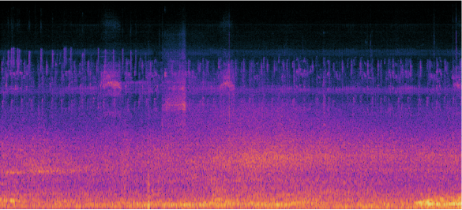

Noise In Scope
Visualizing Noise(scapes) in Atlanta

Topic of Inquiry
The goal of this project was to create visualizations of a “data walk” by making inquiries about a local place. The purpose of a data walk is to examine social issues through on the ground observations and embodied experiences. Using spatial data, we can examine social structures through the concept of relational and dynamic boundaries. This project sets out to investigate noise pollution in central and peripheral midtown Atlanta.
Guiding Questions
- How do our bodies react to noise pollution?
- In what ways is it gradient and where does it change suddenly ?
- How do people experience noise differently (in transport, at home, length of time)?
- What social and infrastructural issues is noise associated with?
- What sound layers (desired and undesired) make up the sound of a living city?
Background Info
Human biology evolved to react to sound as an alarm system that never turns off, even during rest. In a modern life, most of the worlds populations live in dense cities, constantly surrounded by the sound of people, music, industrial machines: cars, roads, construction, buildings.
Next to air pollution, noise pollution is the next highest rate of pollution. Its effects range from loss of hearing, sleep disturbances, mental health and cognition problems, and increased risk for heart disease (Hammer et al., 2014) as well as a dilution of cultural soundscape.
Although it permeates and affects everyone living in an area, noise is yet another ground on which social boundaries develop. Research shows that noise pollution disproportionate affects neighborhoods with low socioeconomic status and residents of color (Casey et al., 2017). Those working in blue-collar jobs (e.g. construction, factory farm floor) might be bombarded, and thus resigned to, noise at work. In addition to that, the home might not provide any respite as certain communities face more noise pollution being located in less-ideal areas such as next to airports and train centers.
Research & Analysis
For my data “walks”, I went on several bike rides over three weekends. I did not have a visualization method in mind yet but I kept the inquiring questions in mind as I made my way through different spots of Atlanta. To document the process and to collect material for visualizations, I stopped at dozens of places to take photos and video recordings of each environment using both my phone and camera.

The sound files I collected were then passed through audio software to analyze various qualities like pitch, loudness, and variation. Here is a waveform taken from Juniper Street in Midtown:

I searched for the existing ways that sound is analyzed. One method is by observing a sound’s spectrogram, a graph that depicts the following sound characteristics:
- X-axis = Time
- Y-axis = Pitch
- Black-Red = Low volume
- Yellow-White = High volume
- Overtones (multiple frequencies)

The echoing waves in this graph is the high-volume and high-pitched sirens of a Firetruck passing by.
The small purple lines here are low-volume, high-pitched birds singing in Freedom Park.
Representing the Data: Iteration 1
In conducting a comparative analysis of current methods of representing noise pollution, I saw that most are centered on visualizing numerical levels of sound intensity and hearing loss. I decided to rather express the embodied experience of noise pollution as I experienced it on the data walks.
I first ideated by sketching different ways I could represent the data I collected.
In the first developed draft, I used the photo taken at one of the sites and distorted it based on the amplitude and wavelengths in the sound file. The sound’s spectrogram image was used as an overlay layer to include objective (yet abstracted) information and to add mood.

Representing the Data: Iteration 2
Reflecting on the draft, I felt that it did not tell a clear message. It lacked the capacity to portray a sense time or movement that is present in sound. In the next iteration, the goal was to introduce the sense of change and temporality. In order to ideate more ways of representation, I found it helpful to ask more questions:
- How does noise pollution relate to other types of pollution?
- What’s the texture of noise?
- What is its shape of sound?
- How does sound physically work?
- What actions are associated with sound?
Part 1: Building
The answer came when I accidentally stumbled onto a cheap cardboard kaleidoscope made with colorful beads. When a light shines through it, the inner reflective surface bounces the light over and over to creates symmetrical patterns. And it struck me that a mirror is, in a sense, a visual equivalent to the echoing of sound waves.
After experimenting with foil and different types of kaleidoscopes, I settled on one in the shape of an open cone based on a triangular section of a dodecagon. When an illuminated image (like from a phone screen) is placed on the smaller end of the cone, reflections are created to make the shape of a 3D dodecahedron.


Part 2: Visualizing
The second iteration of visualizations were all created with the kaleidoscope medium in mind. Using the sound spectrograms from six different locations, I manipulated the images into more abstract paintings. The color profiles on each resulting image were changed to reflect my own embodied reaction to each place. However, the information from the spectrograms (like pitch and volume) are still intact. While creating the pieces, I listened to loops of the sounds of each environment I was recreating. The lines were drawn while feeling my own heartbeat to imbue abstracted biodata into the character of their movement. The lines are both meant to represent topographic maps as well as perform the mood (stress, calm) and type of sounds (machines, wind, people talking). Below are the pieces that were created with this process.

Beltline Construction Site

Virginia Highlands Surburbs

Cabbagetown Coffee shop

Freedom Park Trail

Sirens in Midtown

Piedmont Park fields
Final Product

I wanted the visualizations to be a part of a more whole interactive experience - one in which the audience has agency in how they interact with the visual pieces and their respective soundscapes. This is to depict real world conditions of how sound moves as we move in our environment and how certain populations have choices in the duration of soundscapes.

In the app is a map of Atlanta and the places that I frequent by bike. Each location is depicted by an icon that hints at the sound qualities - spikes for a harsh soundscape / soft petals for a tranquil soundscape. Each leads to the respective visualizations that can be viewed through the 3D kaleidoscope.
In interacting with this piece, my hope is for the audience is reflect on their own position in relation to noise pollution in the ways in which they are required to partake in it or are protected from it.
In working on this project, I learned a lot about the perspective of visualizing data in non-traditional methods, particularly on how we can design to express people’s lived experiences.
Sources
Casey J., Morello-Frosch R., Mennitt D., Fristrup K, Ogburn E., James P. 2017. Race/ethnicity, socioeconomic status, residential segregation, and spatial variation in noise exposure in the contiguous United States. Environ Health Perspect
Hammer M., Swinburn T., Neitzel R. 2014. Environmental noise pollution in the United States: developing an effective public health response. Environ Health Perspect